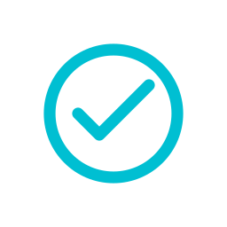
É para você se:- é fisioterapeuta ou multiprofissional e quer aprofundar sua atuação no cuidado com o sono;
- quer entender o que os outros profissionais fazem pelo seu paciente;
- quer discutir casos reais com quem atende sono.
PARA FISIOTERAPEUTAS E MULTIPROFISSIONAIS DO SONO / 2026
MISSÃO BLACK FRIDAY
Curso E se for o Sono? + assinatura anual do Clube de Estudos. Formação e atualização para conectar o conhecimento à sua prática no cuidado com o sono.
Com Flávia Baggio Nerbass, Liliane Mendes,
Rafaela Andrade e especialistas do sono.
CIÊNCIA. PRÁTICA. CONEXÃO.
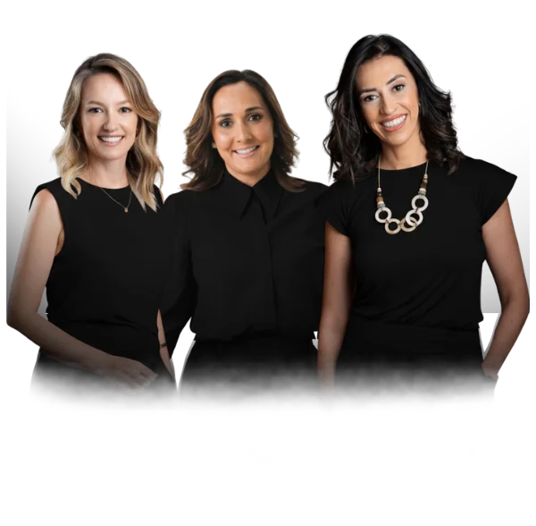
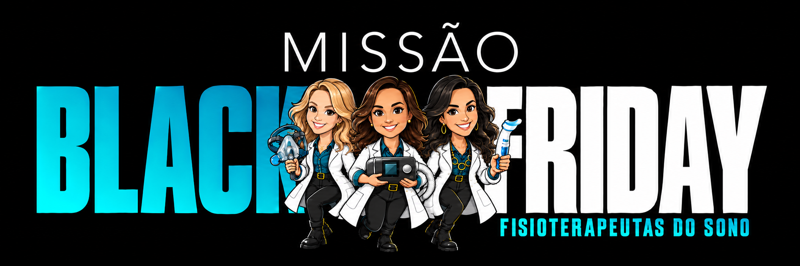
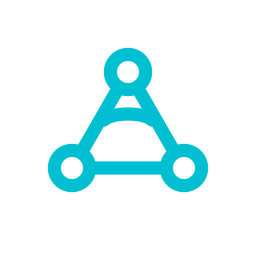
Entenda o papel de cada profissão no cuidado com o sono.
Converse de igual para igual com médico, dentista e fonoaudiólogo.
Saiba quando e para quem encaminhar.
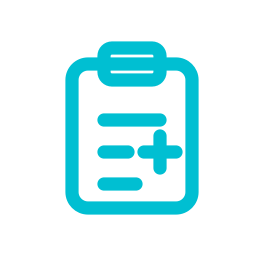
Treine o raciocínio clínico com casos reais.
Estude o curso no seu ritmo por 24 meses.
PARA FISIOTERAPEUTAS E MULTIPROFISSIONAIS DO SONO
O paciente com queixas de sono precisa de um olhar que conecte diferentes áreas. Esta oferta é para fisioterapeutas e multiprofissionais do sono que querem aprofundar o conhecimento e fortalecer a atuação em equipe.
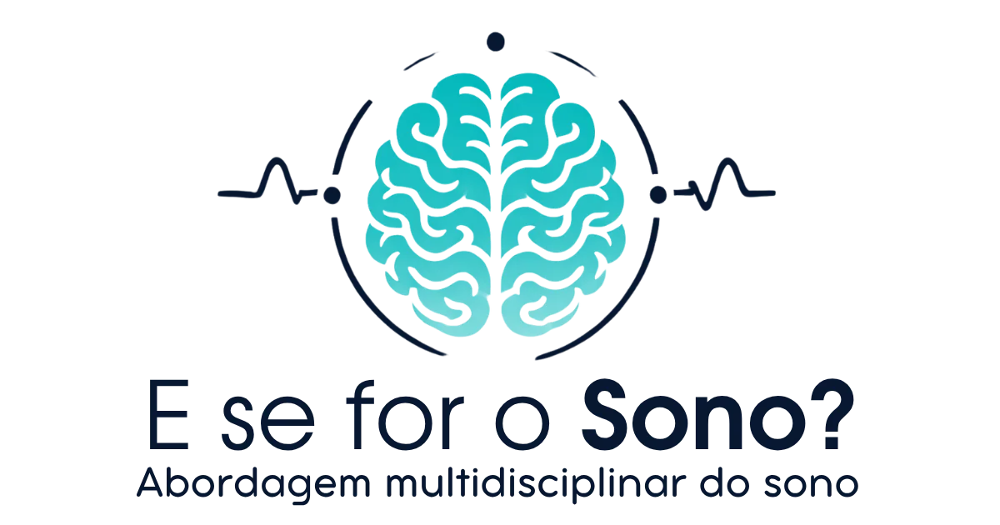
Entender o papel de cada profissão ajuda a reconhecer o que merece atenção, conversar com os colegas e construir uma rede de cuidado mais integrada.

É para você se:UM COMBO, DUAS FRENTES
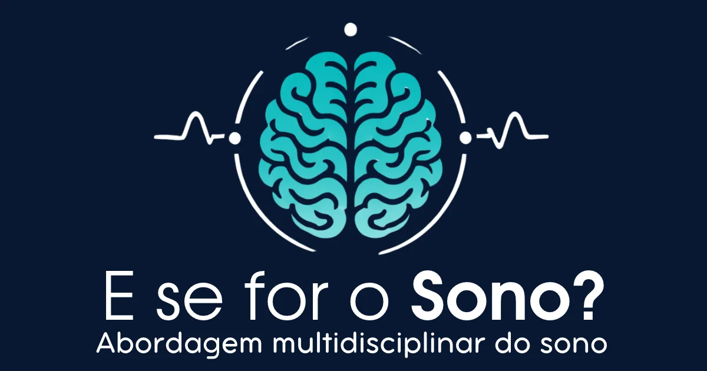
Metodologia estruturada para profissionais da saúde conseguirem detectar, interpretar, encaminhar e intervir nos distúrbios do sono com base na prática clínica de profissionais experientes e pautado em evidências científicas.
Continue evoluindo na prática do sono por meio de casos reais, ciência aplicada e discussões com profissionais que enxergam o mesmo paciente por diferentes perspectivas.
QUEM COMPARTILHA O CONHECIMENTO
No sono, ninguém cuida sozinho. Por isso, cada tema é ensinado por um especialista de referência no Brasil.

Medicina do sono
Diretor do Laboratório do Sono da USP

Clínica médica
Coordenador da Residência de Clínica Médica do Hospital das Clínicas da UFMG

Otorrinolaringologia
Research fellow no Brigham and Women’s Hospital, Harvard
Medicina do sono
Especialista pela AMB e pela American Academy of Sleep Medicine

Sono e coração
Coordena o Laboratório do Sono e Coração do PROCAPE

Otorrinolaringologia
Doutor pela USP

Psicologia do sono
Pioneira da psicologia do sono no Brasil
Fonoaudiologia
Professora de mestrado em distúrbios do sono na Espanha

Odontologia do sono
Diretoria da ABROS
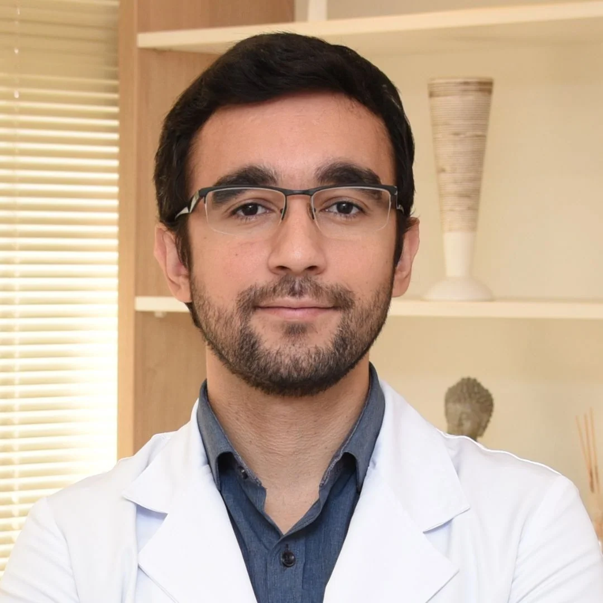
Neurologia
Ambulatório de medicina do sono do Hospital da Polícia Militar de MG
Medicina do sono e otorrinolaringologia
Fundadora do Serviço de Medicina do Sono no Núcleo de Otorrinolaringologia em Belo Horizonte

Pesquisa em sono
Pós-doutora pelo Departamento de Cardiopneumologia da Faculdade de Medicina da USP
Odontologia do sono
Presidente da ABROS de 2022 a 2024

Pneumologia e medicina do sono
Pneumologista do Hospital Belo Horizonte e especialista em Medicina do Sono pela AMB
Motricidade orofacial
Mestre pela UFMG e especialista em motricidade orofacial

Fisioterapia do sono
Doutora em Ciências pela FMUSP · Laboratório do Sono do InCor-HCFMUSP
Fisioterapia do sono
Doutora pela UFMG e PhD pela Universidade de Sydney

Fisioterapia do sono
Doutora em Ciências pela FMUSP · Laboratório do Sono do InCor-HCFMUSP
Nutrição
Núcleo de Nutrição da Academia Brasileira do Sono
Exercício físico
Doutora pelo InCor-FMUSP
DA TEORIA AO CONSULTÓRIO
Um método para detectar, interpretar, encaminhar e intervir nos distúrbios do sono, com 20 especialistas de várias profissões.
Do primeiro sinal na consulta à leitura da polissonografia, do papel do dentista, da fono e do psicólogo à terapia pressórica e à reabilitação.
São 6 módulos, 18 aulas e 2 casos clínicos + Aula Bônus em que o mesmo paciente é discutido por profissionais diferentes. 100% online.
Na prática: você reconhece os sinais de alerta, entende o que a polissonografia e o exame simplificado mostram e sabe para quem encaminhar cada caso.
2 encontros ao vivo por mês: a Mesa Clínica, com casos reais, e a Atualização Aplicada, com artigos recentes. Mais Mapas Clínicos, gravações, comunidade de membros e até 15% de desconto em formações elegíveis.
Na prática: casos e evidências novas discutidos todo mês com quem atende sono.
O dobro do normal, para estudar no seu ritmo.
No grupo de alunos, você troca indicações, faz parcerias e tira dúvidas com colegas que também estudam sono. Ao concluir o curso, recebe o certificado de conclusão.
A CONDIÇÃO DA BLACK
Para fisioterapeutas e multiprofissionais do sono: conteúdo estruturado, atualização contínua e conexões com quem vive o cuidado na prática. Veja tudo o que vem junto na sua inscrição.
CONHECIMENTO ESTRUTURADO
6 módulos, 18 aulas, 2 casos clínicos e uma Aula Bônus, com 20 especialistas de diferentes áreas. Conteúdo 100% online para detectar, interpretar, encaminhar e intervir, com acesso por 24 meses.
ATUALIZAÇÃO AO LONGO DO ANO
2 encontros ao vivo por mês: Mesa Clínica, com discussão de casos reais, e Atualização Aplicada, com artigos recentes. Um espaço para conectar evidência e raciocínio clínico.
RECURSOS PARA REVISITAR
Recursos do Clube para retomar os temas e continuar a troca com os membros durante a assinatura. Inclui até 15% de desconto em formações elegíveis.
CONEXÃO ENTRE PROFISSIONAIS
Grupo de alunos para trocar indicações, construir parcerias e conversar com colegas que estudam sono. Certificado de conclusão ao concluir o curso E se for o Sono?.
BÔNUS DA BLACK
“O oxímetro mede. O exame mostra. E você, sabe interpretar?” Um conteúdo para entender o que olhar e conectar os dados ao raciocínio clínico.
BENEFÍCIOS COM PARCEIROS
Biologix: 10% de desconto, frete grátis e 1 mês de assinatura grátis, para uso até 20/12. CPAPS: desconto no site e condição especial no Kit S11 + 2 máscaras, para compras pelo telemarketing.
BÔNUS COM PRAZO ESPECIAL
A Aula 1 de Hipoxemia Noturna, “Carga hipóxica: por que precisamos ficar atentos?”, também entra para quem se inscrever até as 7h de 18/11/2026, no horário de Brasília. É esta aula, e não o curso completo de Hipoxemia Noturna.
TUDO ISSO NO COMBO DA BLACK
30% DE DESCONTO · POR TEMPO LIMITADODe R$ 3.804 por
12x de R$ 275,39
ou R$ 2.662,80 à vista, no Pix ou no boleto.
Curso E se for o Sono?24 meses de acesso
Clube de EstudosAssinatura anual · 12 meses
Você será direcionado ao checkout da Hotmart.
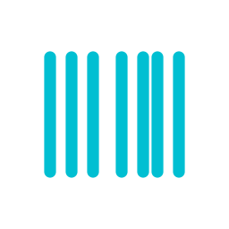
Boleto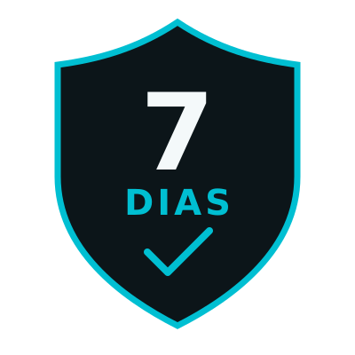
Garantia de 7 diasMais tranquilidade para conhecer o conteúdo e decidir.
ALÉM DO COMBO
Saiba o que olhar. Entenda o que importa. Raciocine com mais segurança.
Cupom exclusivo com 10% de desconto + frete grátis + 1 mês de assinatura grátis. Válido para uso até 20/12.

Cupons exclusivos: desconto em todo o site + desconto especial no Kit S11 + 2 máscaras, para compras pelo telemarketing.

Só nas primeiras 24 horas
Aula 1 do curso Hipoxemia Noturna, “Carga hipóxica: por que precisamos ficar atentos?”, para quem entrar até as 7h de 18/11.
Assista, decida e, se não fizer sentido, peça o reembolso integral em até 7 dias.
CONVERSAS SOBRE O CURSO
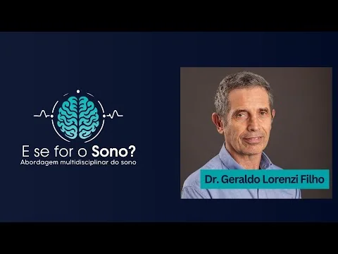
Assistir ao depoimentoMedicina do sono
 Assistir ao depoimento
Assistir ao depoimentoPsicologia do sono
 Assistir ao depoimento
Assistir ao depoimentoOtorrinolaringologia
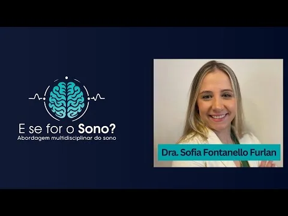
Assistir ao depoimentoPesquisa em sono
 Assistir ao depoimento
Assistir ao depoimentoOtorrinolaringologia
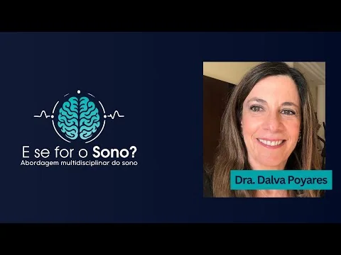
Assistir ao depoimentoMedicina do sono
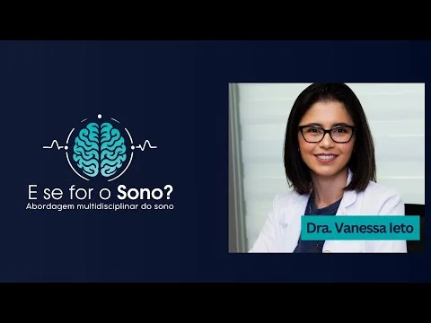
Assistir ao depoimentoFonoaudiologia
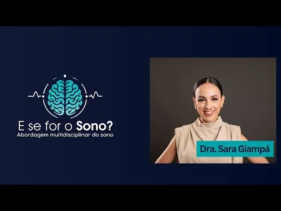
Assistir ao depoimentoExercício físico
 Assistir ao depoimento
Assistir ao depoimentoNutrição
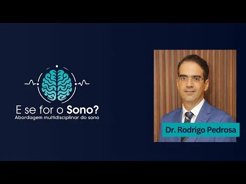
Assistir ao depoimentoSono e coração
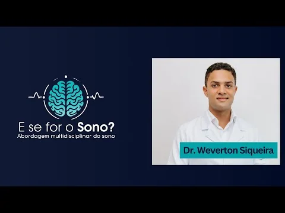
Assistir ao depoimentoClínica médica
CIÊNCIA COM ROSTO E HISTÓRIA

Fisioterapeuta do sono, Doutora em Ciências pela Faculdade de Medicina da Universidade de São Paulo (FMUSP) – Laboratório do Sono (InCor-HCFMUSP).
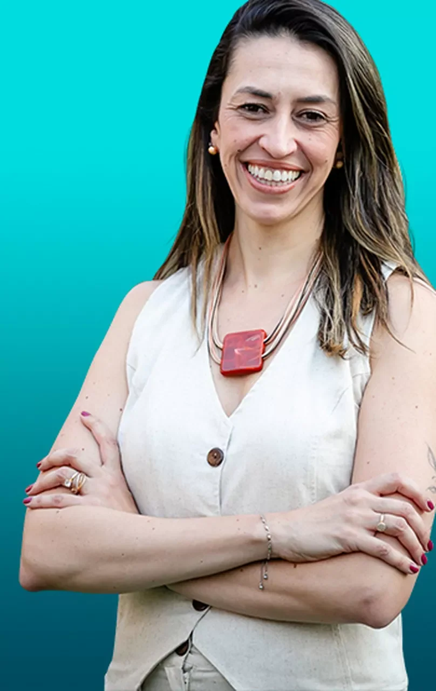
Doutora pela UFMG e PhD pela Universidade de Sydney. Sócia da TRINO, membro da Liga Mineira de Sono, coordenadora de reabilitação pulmonar na UFMG e certificada em Fisioterapia do Sono pela ABS.

Doutora em Ciências pela FMUSP, especialista em Fisioterapia cardiorrespiratória e revisora de periódicos. Sócia da ATERPO e certificada em Fisioterapia do Sono pela ABS por notório saber.
Além de viverem a prática da ciência do sono em seus consultórios diariamente, já formaram mais de 400 fisioterapeutas e profissionais do sono.
CLAREZA PARA O SEU PRÓXIMO PASSO
A oferta é para fisioterapeutas e multiprofissionais do sono que querem aprofundar o conhecimento e conectar sua atuação ao trabalho de outras áreas. Você pode estar ampliando sua atuação ou buscando mais repertório para uma prática que já exerce.
Se você já faz uma formação, o combo ajuda a ampliar as perspectivas. Se ainda está conhecendo o cuidado com o sono, vale revisar os conteúdos e avaliar se eles fazem sentido para o seu momento profissional. Nossa equipe pode ajudar nessa escolha.
Porque conhecer bem a sua área é uma parte do cuidado. O E se for o Sono? reúne o olhar de 20 especialistas para ajudar a entender o papel de outras profissões, interpretar informações e conectar os encaminhamentos.
O Clube de Estudos acrescenta continuidade: casos reais e artigos recentes discutidos ao longo do ano. O curso organiza a base de conhecimento; o Clube cria oportunidades recorrentes de exercitar o raciocínio. A proposta é complementar o que você já estuda.
Nem sempre a dificuldade é perceber que o sono merece atenção. Muitas vezes é entender o que observar, como relacionar os dados e com quem conversar sobre o caso. O curso aborda sinais na consulta, polissonografia, exame simplificado e diferentes possibilidades de cuidado.
Nos casos e discussões do Clube, você acompanha como profissionais conectam essas informações. É uma oportunidade de ampliar o repertório, qualificar as conversas com a equipe e pensar nos próximos passos com mais clareza, respeitando a atuação de cada profissão.
Você recebe o E se for o Sono? por 24 meses — 6 módulos, 18 aulas, 2 casos clínicos e uma Aula Bônus — e 12 meses de Clube de Estudos, com 2 encontros ao vivo por mês, Mapas Clínicos, gravações e comunidade. Também estão previstos o grupo de indicações, o certificado de conclusão do curso e os benefícios do Clube em formações elegíveis.
Os bônus da Black incluem o workshop sobre oximetria e os cupons Biologix e CPAPS, com as condições descritas na oferta. A Aula 1 de Hipoxemia Noturna sobre carga hipóxica é um bônus para inscrições até as 7h de 18/11/2026, no horário de Brasília. Os cursos do catálogo de avulsos são compras separadas. O curso completo de Hipoxemia Noturna não faz parte do combo.
Neste combo, a assinatura do Clube dura 12 meses. São 2 encontros ao vivo por mês: a Mesa Clínica, com discussão de casos reais, e a Atualização Aplicada, dedicada a artigos recentes e sua relação com a prática.
Durante a assinatura, você conta também com gravações, Mapas Clínicos e comunidade de membros. É a parte do combo voltada à atualização contínua e à troca entre profissionais. O prazo do Clube é diferente do prazo de 24 meses do curso.
O E se for o Sono? é 100% online e tem 24 meses de acesso nesta condição da Black. Você pode organizar o estudo e retomar as aulas conforme sua disponibilidade, sem precisar concluir tudo de uma vez.
O Clube inclui encontros ao vivo e gravações durante os 12 meses da assinatura, para que você possa revisitar as discussões. Ao planejar sua rotina, considere esses dois prazos: 24 meses para o curso e 12 meses para o Clube.
Ao concluir o curso E se for o Sono?, você recebe o certificado de conclusão. O combo oferece aprofundamento e atualização para conectar conhecimentos no cuidado com o sono.
Ele complementa seu percurso profissional. O foco está em desenvolver repertório e raciocínio em conjunto com outras áreas, sempre dentro das atribuições da sua profissão.
Sim. O combo prevê grupo de alunos para troca de indicações e parcerias, além da comunidade e das discussões do Clube. Você encontra oportunidades de conhecer outras perspectivas e conversar com colegas que também estudam sono.
Essa convivência pode ajudar a construir relações profissionais e compreender melhor quando buscar apoio de outras áreas. A participação cria oportunidades de conexão; a construção dessas relações depende da troca e do envolvimento de cada pessoa.
O combo está anunciado por 12x de R$ 275,39 no cartão ou R$ 2.662,80 à vista, no Pix ou no boleto. O valor de referência é R$ 3.804; a condição à vista corresponde a 30% de desconto.
O pagamento é feito na Hotmart, pelo botão de compra do bloco da oferta. O total parcelado é diferente do valor à vista. Revise a modalidade escolhida e as condições exibidas no checkout antes de concluir a inscrição.
A oferta inclui garantia de 7 dias. Esse período permite conhecer o conteúdo e avaliar se ele corresponde ao que você procura. Se decidir não continuar, solicite o reembolso dentro do prazo e conforme as condições da compra.
Se a dúvida for qual caminho escolher, fale com a equipe antes de se inscrever. Entender seu objetivo ajuda a avaliar se o combo ou um curso avulso atende melhor à sua necessidade atual.
A condição de 30% de desconto e 24 meses de acesso ao E se for o Sono? é uma oferta de Black Friday por tempo limitado. A assinatura do Clube permanece anual, com duração de 12 meses.
A Aula 1 sobre carga hipóxica tem um prazo próprio: inscrições até as 7h de 18/11/2026, no horário de Brasília. O cupom Biologix tem uso previsto até 20/12. Confira os detalhes de cada benefício na oferta, pois os prazos não são todos iguais.
Conhecimento para ampliar o olhar.
Troca para seguir evoluindo na prática.
CONTINUE EXPLORANDO
Cursos assinalados com 20% de desconto na Black.
 20% OFF
20% OFFRevisão para a prova de certificação: mais de 40 horas, 62 aulas e quiz comentado.
De R$ 2.397 por
12x de R$ 198,32
ou R$ 1.917,60 à vista
 20% OFF
20% OFFPolissonografia e manejo da pressão positiva, com casos reais.
De R$ 1.697 por
12x de R$ 140,40
ou R$ 1.357,60 à vista
20% OFFDo laudo à decisão clínica na hipoxemia noturna.
De R$ 1.607 por
12x de R$ 132,96
ou R$ 1.285,60 à vista
 20% OFF
20% OFF10 aulas com convidados para transformar a fisioterapia do sono em negócio.
De R$ 1.400 por
12x de R$ 115,83
ou R$ 1.120 à vista
 20% OFF
20% OFFAvaliação do paciente pela curva de fluxo respiratório no sono.
De R$ 997 por
12x de R$ 82,49
ou R$ 797,60 à vista
 20% OFF
20% OFFAs particularidades do sono na criança, com e-book de quase 100 páginas.
De R$ 897 por
12x de R$ 74,22
ou R$ 717,60 à vista
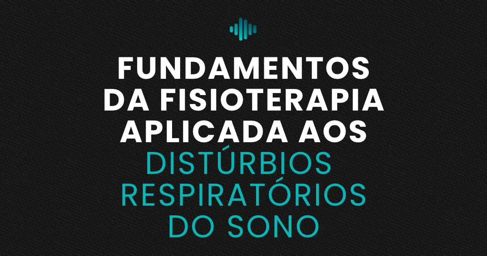
20% OFFOs conceitos para começar a tratar o paciente, em 9 horas.
De R$ 697 por
12x de R$ 57,67
ou R$ 557,60 à vista
Quer saber mais sobre o combo ou encontrar o curso que faz sentido para você? Fale com a nossa equipe.